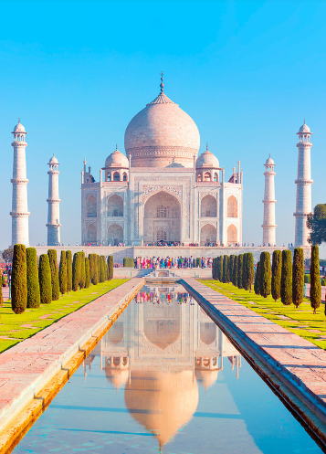

Maravillas del Mundo Moderno
Taj Mahal
Se trata de una construcción funeraria levantada en el siglo XVII bajo encargo del emperador Shah Jahan en honor a su esposa favorira, Mumtaz Mahal. Considerado el más bello ejemplo de palacio, estilo que combinaelementos de las arquitecturas Islámica, Persa, India y Turca.
© Copyrigth 2021. Todos los derechos Reservados. Venezuela